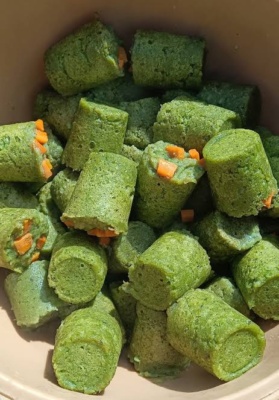

GONRE
Description
Un gâteau de haricots cuit à la vapeur,
enrichi de feuilles vertes et consommé chaud avec de l'huile.
les differentes etapes pour sa preparation
- Mélanger la farine et la potasse
- ncorporer l'eau pour former une pâte
- Ajouter les feuilles hachées et saler
- Former des boudins avec la pâte
- Cuire les boudins à la vapeur
les differents condiments durant saa preparation
- Farine de haricot niébé (300 g)
- Feuilles d'oseille ou d'épinards (1 botte)
- Potasse (1 pincée)
- Eau (200 ml)
- Sel